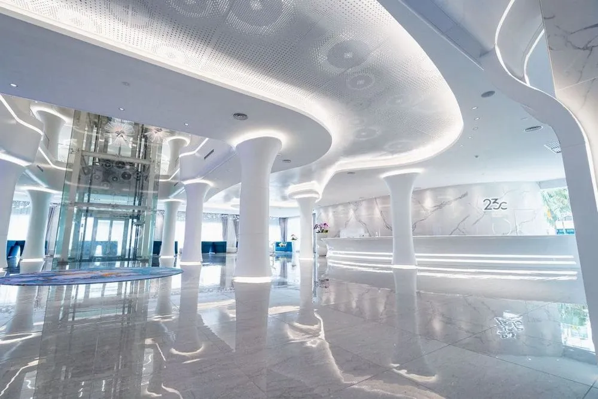

Adoption of Wharton’s Jelly Mesenchymal Stem Cells

At 23C, we use Wharton’s Jelly mesenchymal stem cells (WJ-MSCs), known for their exceptional regenerative potential.
WJ-MSCs are mesenchymal stem cells derived from the umbilical cord of newborns, with high proliferative capacity and the ability to differentiate into various types of cells.
This makes them highly effective in repairing damaged tissues and regulating the immune system, and they are widely used in the field of regenerative medicine.
They also have the characteristic of secreting abundant growth factors and anti-inflammatory substances, helping to suppress inflammation and promote tissue regeneration.
As a result, they are applied in the treatment of numerous conditions, including neurological diseases, autoimmune disorders, and joint diseases.
Internationally Certified In-House Cell Culture Facility

The 23 Century International Life Science Centre (23C), based in Kuala Lumpur, is an international stem cell research institution equipped with Southeast Asia’s largest cell culture and manufacturing facility.
It is authorized by the National Pharmaceutical Regulatory Agency of the Malaysian Ministry of Health and operates as a cGTPs laboratory meeting cGMP requirements, in compliance with the standards of the Pharmaceutical Inspection Co-operation Scheme (PIC/S), providing high-quality cell products.
Proven Track Record with Over 20,000 Clinical Cases
Establishing the safety and efficacy of stem cell therapy requires years of research and the accumulation of clinical data.
To date, 23C has conducted more than 20,000 clinical studies on stem cell therapy, contributing to the advancement of treatment techniques in collaboration with medical institutions worldwide.
We have also provided technology to over 70 medical institutions, working to expand and standardize the scope of stem cell therapy.
Global-Standard Quality Assurance System
Stem cell quality is directly linked to treatment success rates and safety, requiring strict quality control.
At 23C, we follow manufacturing processes that comply with cGMP (Current Good Manufacturing Practice) and cGTPs (Current Good Tissue Practices), and our facilities are equipped with Grade A and B cleanrooms to ensure the highest standards in stem cell culture and manufacturing.
We have passed audits by the Malaysian NPRA and comply with PIC/S standards, achieving quality assurance at an international level.
Rigorous Risk Management and Safety Measures
To ensure safety in stem cell therapy, we maintain full traceability of all cells and operate a 24-hour monitoring system.
To preserve cell quality, only final products that pass strict quality tests—such as impurity checks, virus screening, and viability testing—are provided.
We also conduct thorough risk assessments based on PIC/S standards to deliver safe and reliable stem cell treatments.
Comprehensive Support from Dedicated Staff
One of our key roles is to remove barriers such as language, culture, and unfamiliar systems when receiving advanced medical care overseas.
We provide one-stop support from our dedicated staff.
This includes assistance from the initial inquiry, travel schedule coordination, accommodation arrangements, local transfers and escort services, and post-treatment follow-up—our team handles everything.
Airport-hotel transfers and clinic escorts are included as standard services, and on the day of treatment, we ensure you can relax in our dedicated lounge.
We understand that traveling for treatment can cause anxiety and nervousness, but having our staff by your side provides peace of mind throughout your journey.
At the forefront of stem cell therapy, we continue to innovate and provide treatments backed by scientific evidence.
We put the health and future of our patients first and strive to offer the most suitable treatments for each individual.
If you are considering stem cell therapy, please feel free to contact us. We provide an environment where you can undergo treatment with complete confidence.